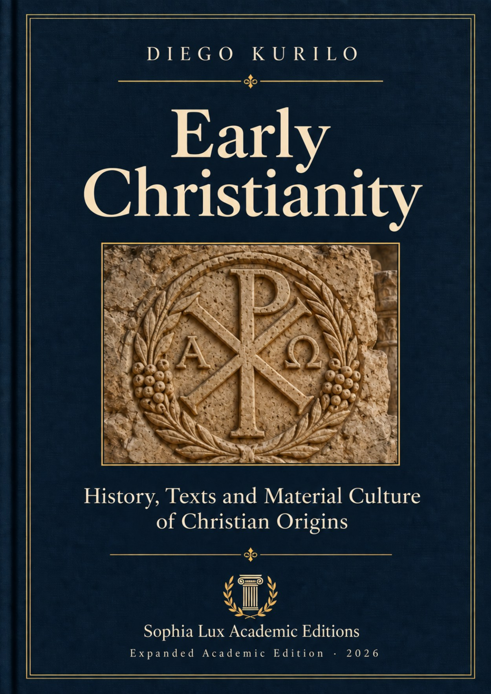
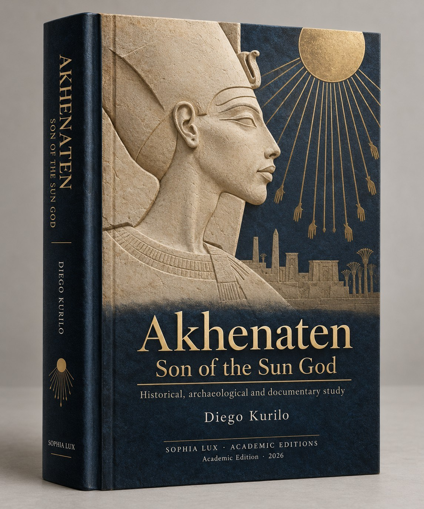

Featured research
Byblos: Symbolic Architecture
A comparative study of sacred geometry, proportion and cosmological symbolism in ancient and classical traditions.
View on Google Play BooksStudies in the history of architecture, classical texts, ancient cultures and religious traditions. Editions and bibliographic details are reviewed individually before publication.



